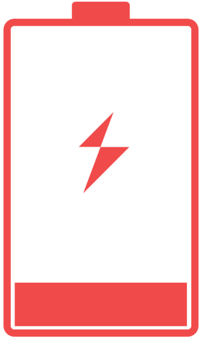
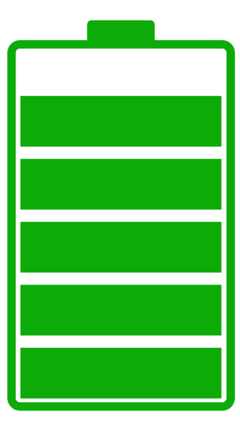
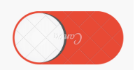
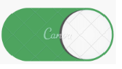

<ion-content [fullscreen]="true">
  <app-header></app-header>
  <div class="flex flex-col items-center justify-center h-full p-6 bg-gray-50">
    <!-- Contenedor de la batería y porcentajes -->
    <div class="flex flex-row items-center justify-around w-full">
      <!-- Contenedor de la batería izquierda -->
      <div class="flex flex-col items-center">
        
        <p class="text-xl font-bold">20%</p>
      </div>
      <!-- Contenedor de la batería derecha -->
      <div class="flex flex-col items-center">
        <!-- Añadir imagen de la batería baja aquí -->
        
        <p class="text-xl font-bold">100%</p>
      </div>
    </div>
    <div class="flex flex-row items-center justify-around w-full mt-6">
      <!-- Añadir ícono o imagen de auricular izquierdo aquí -->
    
      <p class="text-lg" style="margin-right: 0px;">L</p>
      
    
      <!-- Añadir ícono o imagen de auricular derecho aquí -->
      
      <p class="text-lg" style="margin-left: 0px;">R</p>
    </div>
    
  </div>
</ion-content>
